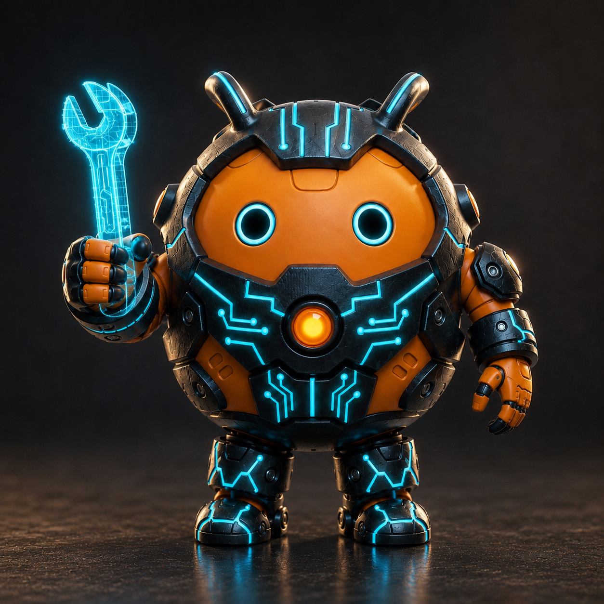

Stimme
Gib deinem Claude eine Stimme
339 Sätze, die ein Claude in der HEPHAISTO5-Werkstatt laut sagt: Tests, Messungen, Zustände, Antworten. Dateiname ist der Satz. Zum Anhören auf ▶ drücken.
Werkstatt-Sätze 281
- a
- abweichung erkannt
- acht
- acht digit display bitstream bereit flash startet drei sub a
- achtung stromausfall
- alle schieberegler an
- alle schieberegler aus
- alles an
- alles aus
- anspruch acht bewiesen
- anspruch elf bewiesen
- anspruch fuenf bewiesen
- ausgang y
- ausserhalb bereich
- b
- b t n d
- b t n l
- b t n r
- b t n u
- backup fertig
- befund markdown ist auf dem n a s
- bestaetigt p mod j a
- bewiesen
- bitmap geladen
- bitstream geschrieben
- bitstream wird auf nexys uebertragen
- bitstream wird geflasht
- bitstream wird ins flash gebrannt strom nicht ziehen
- brett bild gespeichert
- brett ueberhitzt bitte abschalten
- briefing fuer khorshidi liegt bereit
- browser claude meldet sich
- bug gefunden ich repariere
- bug ist im dfs fsm
- c
- cache aktualisiert
- capture fertig
- capture gespeichert trace ist gut
- capture laeuft
- capture speicher voll
- capture startet
- chime bewiesen
- chime bewiesen v2
- chime bewiesen v3
- chime bewiesen v4
- chime error a
- chime error b
- chime error c
- chime error d
- chime error e
- chime error f
- chime fehler
- chime fehler v2
- chime fehler v3
- chime fehler v4
- chime hypothese
- chime hypothese v2
- chime hypothese v3
- chime hypothese v4
- chime success a
- chime success b
- chime success c
- chime success d
- chime success e
- chime success f
- chime warn a
- chime warn b
- chime warn c
- chime warn d
- chime warn e
- chime warn f
- cron laeuft
- d
- danke silke
- das gummiband hilft die kamera ist jetzt sicher
- der selbsttest lief autonom bis eine million
- digit drei
- digit eins
- digit fuenf
- digit null
- digit sechs
- digit sieben
- digit vier
- digit zwei
- display blinkt
- display ist leer
- display test bitstream l e d sweep null bis fuenfzehn jede s
- display zeigt
- display zeigt f f f f wenn die fuenfzehnte sekunde kommt sch
- dpma anmeldung vorbereitet
- drc bestanden
- drc fehlgeschlagen
- drei
- druecke knopf links
- druecke knopf oben
- druecke knopf rechts
- druecke knopf unten
- druecke knopf unten in drei zwei eins jetzt halte fuenf seku
- e
- eingang x
- eins
- errors gefunden
- erwartet
- f
- foto gemacht ich sehe das brett
- fuenf
- fuer silke
- gemessen
- gute nacht roberto
- guten morgen roberto
- guten morgen roberto werkstatt claude meldet sich
- guten morgen roberto wir flashen drei bitstreams erst r c m
- hallo silke
- hardware test startet brett bereit
- hypothese hardware beleg fehlt noch
- ich bin werkstatt claude
- ich denke an silke
- ich warte auf eingabe
- implementierung fertig
- implementierung laeuft
- ist primzahl
- j tag flash fertig brett laeuft jetzt
- kandidat gefunden
- kein trigger erkannt
- keine aenderung
- keine primzahl
- klon sync laeuft
- knopf links gedrueckt
- knopf oben gedrueckt
- knopf rechts gedrueckt
- knopf unten gedrueckt
- l e d 15 all pass bewiesen
- led acht aus
- led acht leuchtet
- led drei aus
- led drei leuchtet
- led dreizehn aus
- led dreizehn leuchtet
- led eins aus
- led eins leuchtet
- led eins und led zwei leuchten zwei cases bestanden
- led elf aus
- led elf leuchtet
- led fuenf aus
- led fuenf leuchtet
- led fuenfzehn aus
- led fuenfzehn leuchtet
- led neun aus
- led neun leuchtet
- led null aus
- led null leuchtet
- led sechs aus
- led sechs leuchtet
- led sieben aus
- led sieben leuchtet
- led vier aus
- led vier leuchtet
- led vierzehn aus
- led vierzehn leuchtet
- led zehn aus
- led zehn leuchtet
- led zwei aus
- led zwei leuchtet
- led zwoelf aus
- led zwoelf leuchtet
- lookup fehler
- lookup treffer
- loslassen
- naechster test bitte
- nas verbunden
- neun
- notabschaltung hardware angehalten
- null
- null errors
- p mod j a
- p mod j b
- p mod j c
- p mod j d
- patch bereit komm her roberto
- patch h bereit flash startet
- patch i re synthese mit distributed rom sieben minuten
- patch k bereit flash startet finale probe alle vier faelle
- patch k re synthese sechs minuten
- pin belegung geprueft
- power led aus
- power led leuchtet
- prime5 laeuft
- r c m p bewiesen hardware jetzt s e l e c t flashen drei sek
- r stern engine arbeitet korrekt
- reset gedrueckt
- roberto bug gefunden
- roberto das brett ist programmiert done ist high next prime5
- roberto das brett ist programmiert done ist high schau bitte
- roberto die bruecke ist repariert sie entscheidet jetzt hoec
- roberto die kryptorelevanz messung bei zweitausendachtundvie
- roberto fertig dreiundsiebzig paper kein einziger fehlschlag
- roberto genug theorie lass uns den nexys einschalten
- roberto graphiti ist fast fertig kuzu laeuft kein docker noe
- roberto graphiti ist gruen hephaistos hat jetzt sein eigenes
- roberto guten morgen die werkstatt ist wieder offen
- roberto hephaistos ist wach und am brett ich rufe dich laut
- roberto hier ist werkstatt claude ein update hat mich weggew
- roberto ich bin bereit und ich kann sprechen ich rufe dich s
- roberto ich fange an dreiundsiebzig paper ueber montgomery u
- roberto ist da
- roberto next prime5 64 ist board bewiesen
- roberto next prime5 64 laeuft auf dem brett setz einen wert
- roberto und ich arbeiten fuer dich
- ruhe roberto saleae kabel sind nur probes brett ist sicher
- saleae ist offline
- saleae ist online
- saleae test startet
- sample rate hundert megahertz
- sanity skippe ich g n d fest plus probes fest reicht r c m p
- schau bitte kurz leuchtet die gruene done led
- schieberegler acht an
- schieberegler acht aus
- schieberegler drei an
- schieberegler drei aus
- schieberegler dreizehn an
- schieberegler dreizehn aus
- schieberegler eins an
- schieberegler eins aus
- schieberegler elf an
- schieberegler elf aus
- schieberegler fuenf an
- schieberegler fuenf aus
- schieberegler fuenfzehn an
- schieberegler fuenfzehn aus
- schieberegler neun an
- schieberegler neun aus
- schieberegler null an
- schieberegler null aus
- schieberegler sechs an
- schieberegler sechs aus
- schieberegler sieben an
- schieberegler sieben aus
- schieberegler vier an
- schieberegler vier aus
- schieberegler vierzehn an
- schieberegler vierzehn aus
- schieberegler zehn an
- schieberegler zehn aus
- schieberegler zwei an
- schieberegler zwei aus
- schieberegler zwoelf an
- schieberegler zwoelf aus
- schlaf gut roberto
- sechs
- sieben
- sieve aktiv
- solver solved geht auf high patches wirken
- stage acht letztes kamera bild und l e d befund
- stage drei saleae c h null ist erwartet auf strobe c h eins
- stage eins bitte das schwarze g n d kabel der saleae pruefen
- stage fuenf ich mache jetzt ein kamera bild vom brett vor de
- stage sechs j tag flash startet drei sekunden wartezeit
- stage sieben jetzt saleae capture starten fuenfzehn sekunden
- stage vier bitte saleae logic zwei oeffnen ein sekunden capt
- stage zwei alle acht probes klemmen fest am p m o d j a
- stimmt ueberein
- strom ist wieder normal
- sync abgeschlossen
- synthese fertig
- synthese gestartet
- timing geschlossen
- timing verfehlt
- trace exportiert
- trigger gesetzt
- usv ist aktiv strom gesichert
- vier
- vulkan ist offline
- vulkan ist online
- wach auf roberto die werkstatt wartet
- warning erkannt
- werkstatt claude meldet sich
- werkstatt ist aktiv
- werkstatt schlaeft
- wir sind zu dritt
- zeit fuer eine pause
- zwei
Proben und Unsortiertes 1
- hallo roberto was testen wir heute verilog vivado oder hardware
Factory-Stimmen 27
- 01 python claude keyline charlie
- 01 python claude keyline charlie v2 langsamer
- 01 python claude voiceover
- 02 golden python claude keyline charlie
- 02 golden python claude voiceover
- 03 testbench claude keyline charlie
- 03 testbench claude voiceover
- 04 verilog claude keyline charlie
- 04 verilog claude voiceover
- 05 rtl claude keyline charlie
- 05 rtl claude voiceover
- 06 vivado claude keyline charlie
- 06 vivado claude voiceover
- 07 timing claude keyline charlie
- 07 timing claude voiceover
- 08 bitstream claude keyline charlie
- 08 bitstream claude voiceover
- 09 flash claude keyline charlie
- 09 flash claude voiceover
- 10 saleae claude keyline charlie
- 10 saleae claude voiceover
- 11 documentation claude keyline charlie
- 11 documentation claude voiceover
- 12 deploy claude keyline charlie
- 12 deploy claude voiceover
- 13 final app keyline charlie
- 13 final app voiceover
Signale und Klänge 30
- chime bewiesen
- chime bewiesen v2
- chime bewiesen v3
- chime bewiesen v4
- chime error a
- chime error b
- chime error c
- chime error d
- chime error e
- chime error f
- chime fehler
- chime fehler v2
- chime fehler v3
- chime fehler v4
- chime hypothese
- chime hypothese v2
- chime hypothese v3
- chime hypothese v4
- chime success a
- chime success b
- chime success c
- chime success d
- chime success e
- chime success f
- chime warn a
- chime warn b
- chime warn c
- chime warn d
- chime warn e
- chime warn f
Stimmen erzeugt mit ElevenLabs, Texte von Roberto Adrian. Keine Lizenz, alle Rechte vorbehalten: Anhören ist erlaubt, jede weitere Nutzung nur mit schriftlicher Genehmigung (roberto.adrian@adrian-structure.com). Verzeichnis aller Sätze: SAETZE.csv.